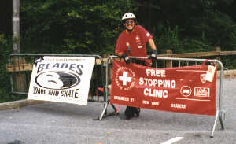
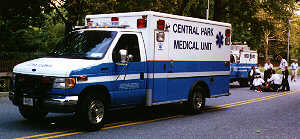

FAQ
Safety
Wear a Helmet!
Skate School
Stopping Clinics
Thursday Evening Skate
Heel Brake Tutorial
Partners
Join Us
Contact
Links
Credits
Safety and Law Enforcement |
||
 |
While the Central Park Skate Patrol isn't authorized to enforce Park laws, we do encourage people to skate safely and wear a helmet. Patrollers communicate with each other via cell phones, and if we see an accident happen or a crime being committed we can notify the Central Park Medical Unit and the Central Park Police Precinct via our cell phones or one of the police call boxes located throughout the Park. |  |
 |
Officers from the Central Park Police Precinct constantly patrol the Park in cars, on horseback, on foot, and on bikes. The Central Park Precinct is officially the 22nd Precinct, but in practice it is almost never referred to by number. For more information on the New York Police Department (NYPD), see the NYPD Web site. |  |
 |
The Central Park Medical Unit (CPMU) is an all volunteer Emergency Medical Service dedicated to the Central Park community. CPMU's ambulances are staffed by fully certified Emergency Medical Technicians (EMTs) and Paramedics who provide advanced first aid and medical care to Park goers. CPMU also has a special Medical Bike Patrol that allos them to quickly assist sick or injured people in hard to reach areas. Working in concert with FDNY, NYPD, and the Skate Patrol, the Central Park Medical Unit helps to insure a safe day of fun for those who enjoy the Park. For more information on the CPMU, see the CPMU Web site. |  |